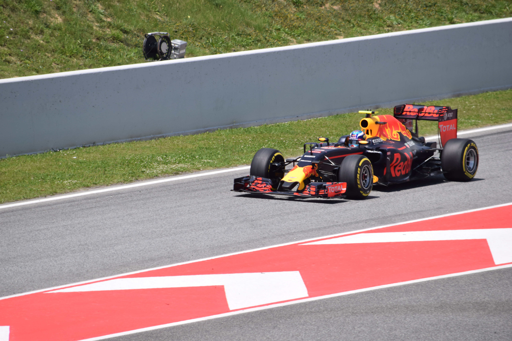
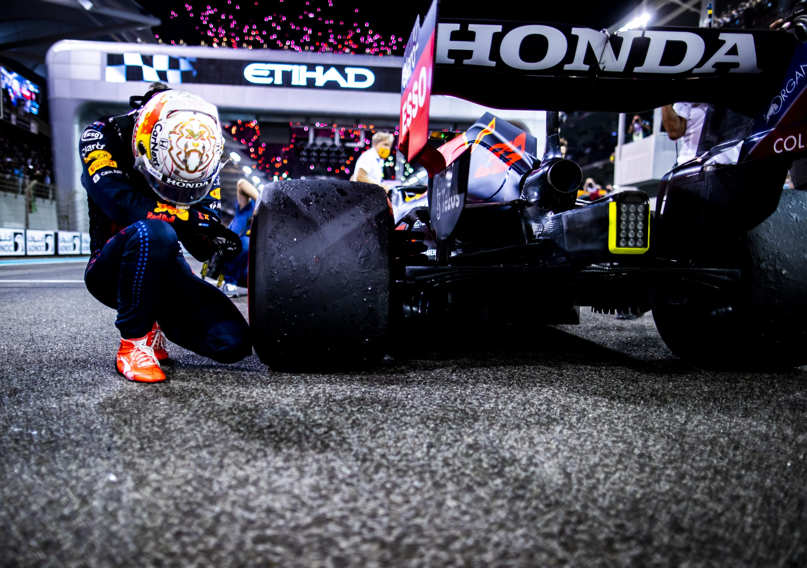

1997
Born Into Speed
Max Emilian Verstappen born on 30 September 1997 in Hasselt, Belgium. His father Jos is a Formula One driver. His mother Sophie is a karting champion. The DNA is written in combustion.
Origin Story
2001–2012
Karting Prodigy
Begins karting at age 4. Wins first race at 7. By his early teens he is dominating national and European karting championships, winning multiple titles across Belgium and the Netherlands. Racing isn't a hobby — it's everything.
Karting Era
2013
Triple Crown of Karting
At just 15 years old, Max holds the World KZ Championship alongside two European karting titles simultaneously. Three international titles at once — a feat never accomplished before in the history of the sport. The motorsport world takes notice.
Historic Achievement
2014
FIA F3 & Red Bull Junior
Skips Formula 4 entirely. Goes straight to FIA F3 European Championship. Finishes third in his rookie season, wins six races in a row. Red Bull signs him to their junior programme. In October, he drives an F1 car in free practice at Suzuka, aged 17 years and 3 days — making him the youngest ever to do so.
F1 on the Horizon
2015
The Youngest F1 Driver Ever
Signs for Scuderia Toro Rosso. Makes his F1 race debut at the 2015 Australian Grand Prix aged 17 years and 166 days — the youngest driver in F1 history, breaking Jaime Alguersuari's record by nearly two years. Wins Rookie of the Year, Personality of the Year, and Action of the Year at the FIA Awards — in his debut season.
Record Broken
May 2016
Spanish GP — The Birth of a Legend
Promoted to Red Bull Racing after just four Toro Rosso races in 2016. On debut in Barcelona, the 18-year-old wins the Spanish Grand Prix. Youngest race winner in F1 history. He never looked back. Autosport called it "the most remarkable debut in the sport's modern era."
Youngest Ever Race Winner

SPAIN 2016 WINtl-spain2016.jpg
Nov 2016
Brazil — The Rain Masterclass
In torrential rain at Interlagos, starting P16 with 14 laps to go, Max drives one of the greatest wet-weather performances in F1 history. Nine overtakes. Finished third. Commentators lost their voices. F1 fans lost their minds. A calling card for eternity.
Legendary Performance
2017–2020
Building. Winning. Waiting.
Ten victories, 42 podiums across four seasons. Finishes no lower than 6th in the championship. Develops full race craft: tyre management, strategy, defence. The Mercedes era denies him the title, but makes him complete. He's sharpening himself into something unstoppable.
The Formative Years
Dec 2021
Abu Dhabi — The First Crown ★
Equal points. Final lap. Safety Car restart. Fresh tyres vs. worn. Max overtakes Lewis Hamilton on the last corner of the last lap to become the first Dutch Formula One World Champion. One of the most dramatic conclusions to a season in sporting history.
World Champion #1

ABU DHABI 2021tl-abu2021.jpg